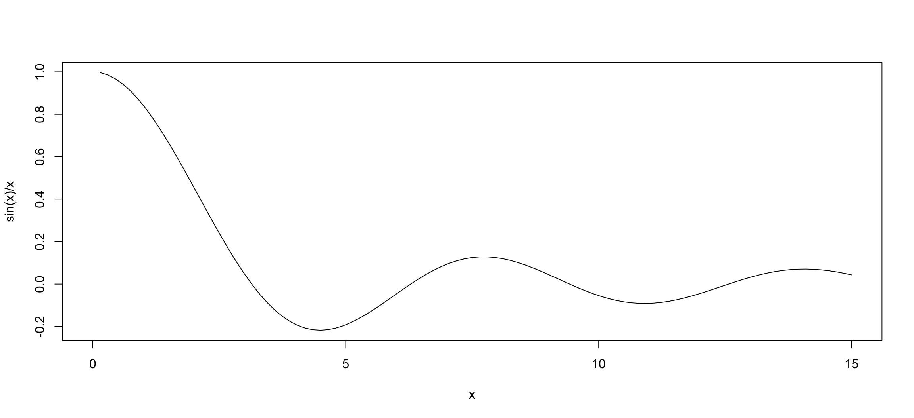

[1] 4[1] 32[1] 0.7853982Unità A: calcolo scientifico ed algebra lineare
Tommaso Rigon
Università Milano-Bicocca
Nota
Esercizi R associati sono diponibili a questo link
Anzitutto, R può essere usato come se fosse una calcolatrice scientifica:
[1] 4[1] 32[1] 0.7853982Le quantità \(\sqrt{2}\) e \(\sin(\pi/4)\) si ottengono invece con i comandi:
Nota
Tutto ciò che viene scritto dopo un cancelletto (#) è considerato un commento.
È possibile salvare un valore assegnandolo ad un oggetto tramite il simbolo <-.
Il valore contenuto in x può essere successivamente richiamato, modificato e salvato in un nuovo oggetto, chiamato ad esempio y.
Per rimuovere un oggetto dalla memoria, si usa il comando rm, ovvero remove.
Nota
R è case sensitive, pertanto l’oggetto x è diverso dall’oggetto X.
È buona norma mantenere pulito il workspace, ovvero l’ambiente di lavoro.
Se un oggetto non è più necessario, è possibile eliminarlo tramite il comando rm.
È possibile visualizzare la lista di oggetti salvati in memoria tramite il comando seguente:
Supponiamo che x sia un numero reale.
Ciò che seguono sono una lista di funzioni disponibili in R:
[1] 0.4794255[1] 0.8775826[1] 0.5463025Nota
Le funzioni di R si possono combinare tra loro, ad esempio log(abs(x)).
Supponiamo che x e y siano due numeri reali. Inoltre, siano n e k due numeri naturali.
Si noti l’uso del ; che può essere usato per separare due comandi nella stessa riga.
La funzione gamma \(\Gamma(x) = \int_0^\infty s^{x-1} e^{-s} d s\) si calcola in R come segue:
In R è possibile disegnare una qualsiasi funzione tramite il comando curve.
Se ad esempio si considera la funzione \[f(x) = \frac{\sin(x)}{x},\] allora possiamo disegnare \(f(x)\) nell’intervallo \((0,15)\) come segue:
La documentazione di R è la principale fonte di informazioni.
A cosa serve una funzione? Qual è la definizione dei suoi argomenti? La risposta va sempre cercata nella documentazione ufficiale e non in queste slide.
Il comando ? funzione apre una finestra in cui vengono descritta nel dettaglio una funzione. Esempio:
Nota riguardante l’esame
Durante la prova d’esame è legittimo (anzi, è caldamente consigliato) consultare la documentazione.
Numeri molto grandi, come \(10^{15}\), e molto piccoli, come \(10^{-15}\), in R vengono rappresentati come segue:
Per questioni di approssimazione numerica, quando un numero è troppo grande R riporta Inf, ovvero infinito. Per esempio:
È ben noto che \(\sin(\pi) = 0\). Tuttavia, in R si ottiene un numero molto vicino a \(0\), ma strettamente positivo. Infatti:
R è uno strumento di calcolo numerico e pertanto sono sempre presenti errori di approssimazione numerica.
Fortunatamente, nella maggior parte dei casi pratici la differenza tra \(0\) e \(10^{-16}\) è del tutto irrilevante.
In altre situazioni, errori di approssimazione numerica possono portare a conclusioni fuorvianti. Occorre quindi fare attenzione e valutare caso per caso.
In R è spesso necessario verificare se una o più condizioni sono verificate o meno.
[1] FALSE[1] FALSEIl valore di a è un indicatore binario o booleano, ovvero può essere vero (TRUE) oppure falso (FALSE).
Altre funzioni logiche disponibili (assumendo che y sia un numero e b un booleano) sono:
Un vettore in R viene definito tramite la funzione c(), come nel seguente esempio:
Nota
Con il termine generico “vettore” in R non si fa riferimento alla nozione dell’algebra lineare ma semplicemente ad una stringa di valori ordinati.
Il seguente oggetto è un vettore in R, nonostante l’oggetto x sia composto sia numeri che da lettere
Talvolta è comodo creare dei vettori i cui elementi sono dei numeri consecutivi
Per creare una successione di numeri reali si usa il comando seq:
La maggior parte delle funzioni matematiche di R sono vettorizzate. In altri termini, le funzioni agiscono su tutti gli elementi di un vettore.
[1] 4.218282 9.389056 22.585537 57.598150 151.913159 407.428793Ulteriori semplici operazioni in cui l’argomento è un vettore sono elencate nel seguito:
[1] 900[1] 2 6 6 18 180 900[1] 1 2 3 3 5 10[1] 1[1] 3È possibile selezionare gli elementi di un vettore usando le parentesi quadrate, come nei seguenti esempi:
# Concatenazione di vettori
x <- c(rep(pi, 2), sqrt(2), c(10, 7))
x[3] # Estrae il terzo elemento dal vettore x, ovvero sqrt(2)[1] 1.414214[1] 3.141593 1.414214 7.000000[1] 3.141593 10.000000[1] 10 7L’ultimo comando suggerisce che gli elementi di un vettore possono essere selezionati tramite una condizione relativa al vettore stesso.
Cosa succede quando vengono sommati due vettori di dimensioni diverse?
Warning
La maggior parte dei linguaggi di programmazione restituisce un errore. R invece esegue ugualmente l’operazione “allungando” il vettore più corto.
In questo primo esempio, quantomeno R restituisce un warning.
Una matrice \({\bf A}\) è una collezione di elementi \((a)_{ij}\) per \(i=1,\dots,n\) e \(j=1,\dots,m\).
Per esempio, la matrice quadrata di dimensione \(2 \times 2\)
\[{\bf A} = \begin{pmatrix}
5 & 2\\
1 & 4 \\
\end{pmatrix},\] si può definire in R tramite il comando matrix come segue:
Una matrice con una sola colonna è un vettore colonna:
Nella maggior parte dei casi, il {vettore riga x_row è intercambiabile col vettore x.
Ad esempio, le funzioni sum(x_row) e sum(x) forniscono lo stesso risultato.
È possibile selezionare gli elementi di una matrice in maniera analoga a quanto fatto con i vettori.
[1] 2[1] 2 4[1] 5 2Alcuni comandi di base per manipolare le matrici sono i seguenti
Come per i vettori, le operazioni elementari (somma, prodotto, log, exp, etc.) vengono eseguite elemento per elemento.
Siano \({\bf A}\) e \({\bf B}\) due matrici aventi lo stesso numero di colonne e definiamo
\[ {\bf C} = \begin{pmatrix}{\bf A} \\ {\bf B} \end{pmatrix}. \]
Siano \({\bf x}\) e \({\bf y}\) due vettori colonna in \(\mathbb{R}^p\). Allora, il loro è pari a
\[ {\bf x}^\intercal {\bf y} = \sum_{i=1}^p x_i y_i. \]
In R possiamo usare il comando crossprod
x <- matrix(c(-4, 2, 6, 10, 22), ncol = 1)
y <- matrix(c(3, 2, 2, 7, 9), ncol = 1)
crossprod(x, y) # Equivalente a: sum(x * y) [,1]
[1,] 272Il comando crossprod funziona correttamente anche con “vettori” R.
Il comando può essere usato anche per calcolare il seguente prodotto tra matrici \[ {\bf A}^\intercal {\bf B}, \] dove \({\bf A}\) e \({\bf B}\) sono due matrici di dimensioni compatibili.
In algebra lineare il prodotto tra matrici compatibili \({\bf A} {\bf B}\) è chiamato prodotto righe per colonne. In R si usa il comando seguente
A <- rbind(c(1, 2, 3), c(4, 9, 2), c(2, 2, 2))
B <- rbind(c(5, 2, 5), c(3, 3, 7), c(-2, -8, 10))
A %*% B # Prodotto righe per colonne AB [,1] [,2] [,3]
[1,] 5 -16 49
[2,] 43 19 103
[3,] 12 -6 44Nota. Il comando A * B indica il prodotto elemento per elemento e non il prodotto righe per colonne.
Se le matrici non sono compatibili R produce un errore (provateci per esercizio!)
Sia \({\bf A}\) una matrice quadrata \(n \times n\) a valori reali. La sua matrice inversa \({\bf A}^{-1}\), quando esiste, è l’unica matrice tale per cui
\[ {\bf A} {\bf A}^{-1} = {\bf A}^{-1} {\bf A} = I_n. \]
Per ottenere \({\bf A}^{-1}\) si usa il comando solve.
[,1] [,2] [,3]
[1,] -0.5833333 -0.08333333 0.95833333
[2,] 0.1666667 0.16666667 -0.41666667
[3,] 0.4166667 -0.08333333 -0.04166667Nel caso una matrice non sia invertibile, il determinante è pari a \(0\). Il comando solve in quel caso produce un errore.
# Esempio di matrice NON invertibile
A <- rbind(c(1, 2, 3), c(2, 4, 6), c(2, 2, 2))
det(A) # Deteminante pari a 0, solve(A) produce un errore[1] 0Ci sono numerose funzioni per la scomposizione di matrici, il cui output è a volte una lista.
[,1] [,2]
[1,] 2 0.500000
[2,] 0 2.783882$qr
[,1] [,2]
[1,] -4.1231056 -2.910428
[2,] 0.2425356 7.518604
$rank
[1] 2
$qraux
[1] 1.970143 7.518604
$pivot
[1] 1 2
attr(,"class")
[1] "qr"eigen() decomposition
$values
[1] 8.236068 3.763932
$vectors
[,1] [,2]
[1,] 0.2297529 -0.9732490
[2,] 0.9732490 0.2297529Una lista è una collezione di oggetti (numeri, vettori, matrici, etc).
Per salvare o per estrarre un oggetto da una lista si usa il simbolo del dollaro $.
Gli autovalori ed autovettori di una matrice \(\textbf{A}\) si ottengono tramite il comando eigen.
Il risultato è una lista, contenente gli autovettori (vectors) e autovalori (values).
eigen() decomposition
$values
[1] 8.236068 3.763932
$vectors
[,1] [,2]
[1,] 0.2297529 -0.9732490
[2,] 0.9732490 0.2297529